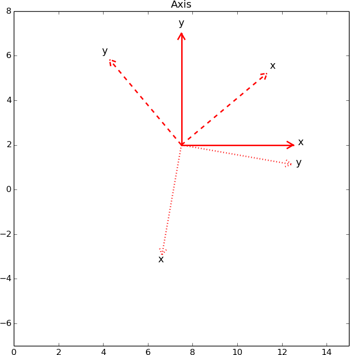
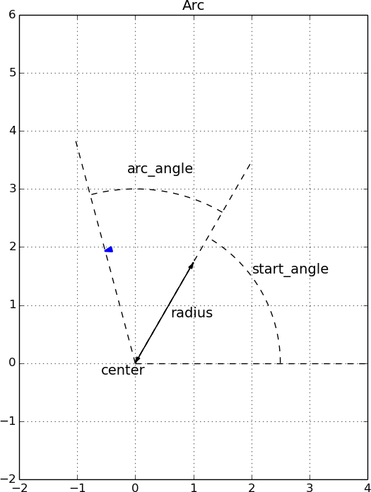

Basic shapes
This section presents many of the basic shapes in Pysketcher:
Axis, Distance_wText, Rectangle, Triangle, Arc,
Spring, Dashpot, and Wavy.
Each shape is demonstrated with a figure and a
unit test that shows how the figure is constructed in Python code.
These demos rely heavily on the method draw_dimensions in
the shape classes, which annotates the basic drawing of the shape
with the various geometric parameters that govern the shape.
Axis
The Axis object gives the possibility draw a single axis to
notify a coordinate system. Here is an example where we
draw \( x \) and \( y \) axis of three coordinate systems of different
rotation:

The corresponding code looks like this:
def test_Axis():
drawing_tool.set_coordinate_system(
xmin=0, xmax=15, ymin=-7, ymax=8, axis=True,
instruction_file='tmp_Axis.py')
# Draw normal x and y axis with origin at (7.5, 2)
# in the coordinate system of the sketch: [0,15]x[-7,8]
x_axis = Axis((7.5,2), 5, 'x', rotation_angle=0)
y_axis = Axis((7.5,2), 5, 'y', rotation_angle=90)
system = Composition({'x axis': x_axis, 'y axis': y_axis})
system.draw()
drawing_tool.display()
# Rotate this system 40 degrees counter clockwise
# and draw it with dashed lines
system.set_linestyle('dashed')
system.rotate(40, (7.5,2))
system.draw()
drawing_tool.display()
# Rotate this system another 220 degrees and show
# with dotted lines
system.set_linestyle('dotted')
system.rotate(220, (7.5,2))
system.draw()
drawing_tool.display()
drawing_tool.display('Axis')
Distance with text
The object Distance_wText is used to display an arrow, to indicate
a distance in a sketch, with an additional text in the middle of the arrow.
The figure

was produced by this code:
def test_Distance_wText():
drawing_tool.set_coordinate_system(
xmin=0, xmax=10, ymin=0, ymax=6,
axis=True, instruction_file='tmp_Distance_wText.py')
fontsize=14
t = r'$ 2\pi R^2 $' # sample text
examples = Composition({
'a0': Distance_wText((4,5), (8, 5), t, fontsize),
'a6': Distance_wText((4,5), (4, 4), t, fontsize),
'a1': Distance_wText((0,2), (2, 4.5), t, fontsize),
'a2': Distance_wText((0,2), (2, 0), t, fontsize),
'a3': Distance_wText((2,4.5), (0, 5.5), t, fontsize),
'a4': Distance_wText((8,4), (10, 3), t, fontsize,
text_spacing=-1./60),
'a5': Distance_wText((8,2), (10, 1), t, fontsize,
text_spacing=-1./40, alignment='right'),
'c1': Text_wArrow('text_spacing=-1./60',
(4, 3.5), (9, 3.2),
fontsize=10, alignment='left'),
'c2': Text_wArrow('text_spacing=-1./40, alignment="right"',
(4, 0.5), (9, 1.2),
fontsize=10, alignment='left'),
})
examples.draw()
drawing_tool.display('Distance_wText and text positioning')
Note the use of Text_wArrow to write an explaining text with an
associated arrow, here used to explain how
the text_spacing and alignment arguments can be used to adjust
the appearance of the text that goes with the distance arrow.
Rectangle

The above figure can be produced by the following code.
def test_Rectangle():
L = 3.0
W = 4.0
drawing_tool.set_coordinate_system(
xmin=0, xmax=2*W, ymin=-L/2, ymax=2*L,
axis=True, instruction_file='tmp_Rectangle.py')
drawing_tool.set_linecolor('blue')
drawing_tool.set_grid(True)
xpos = W/2
r = Rectangle(lower_left_corner=(xpos,0), width=W, height=L)
r.draw()
r.draw_dimensions()
drawing_tool.display('Rectangle')
Note that the draw_dimension method adds explanation of dimensions and various
important argument in the construction of a shape. It adapts the annotations
to the geometry of the current shape.
Triangle

The code below produces the figure.
def test_Triangle():
L = 3.0
W = 4.0
drawing_tool.set_coordinate_system(
xmin=0, xmax=2*W, ymin=-L/2, ymax=1.2*L,
axis=True, instruction_file='tmp_Triangle.py')
drawing_tool.set_linecolor('blue')
drawing_tool.set_grid(True)
xpos = 1
t = Triangle(p1=(W/2,0), p2=(3*W/2,W/2), p3=(4*W/5.,L))
t.draw()
t.draw_dimensions()
drawing_tool.display('Triangle')
Here, the draw_dimension method writes the name of the corners at the
position of the corners, which does not always look nice (the present figure
is an example). For a high-quality sketch one would add some spacing
to the location of the p1, p2, and even p3 texts.
Arc

An arc like the one above is produced by
def test_Arc():
L = 4.0
W = 4.0
drawing_tool.set_coordinate_system(
xmin=-W/2, xmax=W, ymin=-L/2, ymax=1.5*L,
axis=True, instruction_file='tmp_Arc.py')
drawing_tool.set_linecolor('blue')
drawing_tool.set_grid(True)
center = point(0,0)
radius = L/2
start_angle = 60
arc_angle = 45
a = Arc(center, radius, start_angle, arc_angle)
a.draw()
R1 = 1.25*radius
R2 = 1.5*radius
R = 2*radius
a.dimensions = {
'start_angle':
Arc_wText(
'start_angle', center, R1, start_angle=0,
arc_angle=start_angle, text_spacing=1/10.),
'arc_angle':
Arc_wText(
'arc_angle', center, R2, start_angle=start_angle,
arc_angle=arc_angle, text_spacing=1/20.),
'r=0':
Line(center, center +
point(R*cos(radians(start_angle)),
R*sin(radians(start_angle)))),
'r=start_angle':
Line(center, center +
point(R*cos(radians(start_angle+arc_angle)),
R*sin(radians(start_angle+arc_angle)))),
'r=start+arc_angle':
Line(center, center +
point(R, 0)).set_linestyle('dashed'),
'radius': Distance_wText(center, a(0), 'radius', text_spacing=1/40.),
'center': Text('center', center-point(radius/10., radius/10.)),
}
for dimension in a.dimensions:
if dimension.startswith('r='):
dim = a.dimensions[dimension]
dim.set_linestyle('dashed')
dim.set_linewidth(1)
dim.set_linecolor('black')
a.draw_dimensions()
drawing_tool.display('Arc')
Spring

The code for making these two springs goes like this:
def test_Spring():
L = 5.0
W = 2.0
drawing_tool.set_coordinate_system(
xmin=0, xmax=7*W, ymin=-L/2, ymax=1.5*L,
axis=True, instruction_file='tmp_Spring.py')
drawing_tool.set_linecolor('blue')
drawing_tool.set_grid(True)
xpos = W
s1 = Spring((W,0), L, teeth=True)
s1_title = Text('Default Spring',
s1.geometric_features()['end'] + point(0,L/10))
s1.draw()
s1_title.draw()
#s1.draw_dimensions()
xpos += 3*W
s2 = Spring(start=(xpos,0), length=L, width=W/2.,
bar_length=L/6., teeth=False)
s2.draw()
s2.draw_dimensions()
drawing_tool.display('Spring')
Dashpot

This dashpot is produced by
def test_Dashpot():
L = 5.0
W = 2.0
xpos = 0
drawing_tool.set_coordinate_system(
xmin=xpos, xmax=xpos+5.5*W, ymin=-L/2, ymax=1.5*L,
axis=True, instruction_file='tmp_Dashpot.py')
drawing_tool.set_linecolor('blue')
drawing_tool.set_grid(True)
# Default (simple) dashpot
xpos = 1.5
d1 = Dashpot(start=(xpos,0), total_length=L)
d1_title = Text('Dashpot (default)',
d1.geometric_features()['end'] + point(0,L/10))
d1.draw()
d1_title.draw()
# Dashpot for animation with fixed bar_length, dashpot_length and
# prescribed piston_pos
xpos += 2.5*W
d2 = Dashpot(start=(xpos,0), total_length=1.2*L, width=W/2,
bar_length=W, dashpot_length=L/2, piston_pos=2*W)
d2.draw()
d2.draw_dimensions()
drawing_tool.display('Dashpot')
Wavy
Looks strange. Fix x axis.
Stochastic curves
The StochasticWavyCurve object offers three precomputed
graphics that have a random variation:

The usage is simple. The construction
curve = StochasticWavyCurve(curve_no=1, percentage=40)
picks the second curve (the three are numbered 0, 1, and 2),
and the first 40% of that curve. In case one desires another extent
of the axis, one can just scale the coordinates directly as these
are stored in the arrays curve.x[curve_no] and
curve.y[curve_no].